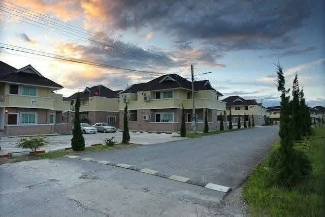

01
อาคารพักอาศัย
อาคารหลายห้องในบริเวณเดียวกัน รองรับการพักระยะยาว

STK RESORT · เชียงราย
บ้านพักและอาคารพักรายเดือน ใกล้มหาวิทยาลัยแม่ฟ้าหลวง
สถานที่ที่นักศึกษาและคนทำงานใช้ชีวิตอยู่ร่วมกัน
01 / รู้จักสถานที่
ถนนสายเล็ก แนวต้นไม้ และบ้านพักที่เรียงตัวอยู่ในบริเวณเดียวกัน ทำให้ STK มีบรรยากาศคล้ายหมู่บ้านแห่งหนึ่งในเชียงราย
ปัจจุบัน STK ให้บริการที่พักรายเดือน มีทั้งนักศึกษาและคนทำงานพักอาศัยระยะยาว บางรายอยู่ต่อเนื่องตลอดช่วงการศึกษา ภายในมีบ้านพักแยกหลังและอาคารพักหลายห้อง ให้รูปแบบการอยู่อาศัยที่หลากหลาย
เป็นโครงการที่เปิดใช้งานอยู่จริง มีระบบน้ำ ไฟฟ้า และอินเทอร์เน็ตให้บริการ อาคารและสิ่งปลูกสร้างมีอายุการใช้งาน ผู้สนใจสามารถนัดชมเพื่อประเมินสภาพจริงได้
02 / บ้าน อาคาร และบรรยากาศ
ภาพจากสถานที่จริง
ทั้งภายนอกและตัวอย่างห้องพัก
อาคารหลายห้องในบริเวณเดียวกัน รองรับการพักระยะยาว
อีกบรรยากาศของการพักอาศัย ภายในโครงการ
ตัวอย่างห้องและเฟอร์นิเจอร์ไม้ รูปแบบแตกต่างกันตามห้อง
ภาพที่ได้รับอาจถ่ายต่างช่วงเวลา สภาพและอุปกรณ์แต่ละห้องอาจแตกต่างกัน โปรดนัดชมสถานที่ปัจจุบัน
03 / อีกมุมมองของพื้นที่
หนึ่งนาทีเพื่อรู้จักพื้นที่
จากระดับสายตาสู่มุมสูง
ภาพมุมสูงและเส้นแสดงพื้นที่ในคลิปใช้ประกอบการนำเสนอ ไม่ใช่เอกสารรับรองแนวเขตที่ดิน
04 / ทำเลและชีวิตรอบตัว
ตั้งอยู่ในตำบลท่าสุด อำเภอเมืองเชียงราย จังหวัดเชียงราย บริเวณปากทางเข้ามหาวิทยาลัยแม่ฟ้าหลวง ตามข้อมูลจากผู้เสนอขาย
ทำเลที่เชื่อมโยงกับชีวิตของนักศึกษาและคนทำงานในพื้นที่ พร้อมบรรยากาศที่พักอาศัยภายในโครงการ
เปิดตำแหน่ง STK บน Google Maps ↗กรุณานัดหมายกับผู้ติดต่อก่อนเข้าชมสถานที่
05 / โอกาสสำหรับเจ้าของคนต่อไป
เปิดรับผู้สนใจซื้อ STK Resort พร้อมที่ดิน สิ่งปลูกสร้าง และกิจการที่พักรายเดือน เพื่อดำเนินงานต่อ หรือศึกษาการปรับปรุงให้เหมาะกับแผนของผู้ซื้อ
มีฐานการใช้งานเป็นที่พักระยะยาว อาคารหลายรูปแบบ และพื้นที่โล่งภายในให้ผู้ซื้อศึกษาทางเลือกการใช้ประโยชน์เพิ่มเติม
การขยายอาคารหรือเปลี่ยนการใช้งานขึ้นอยู่กับข้อกำหนดที่เกี่ยวข้อง สภาพพื้นที่ และผลการตรวจสอบของผู้ซื้อ ไม่ใช่การรับรองว่าสามารถก่อสร้างเพิ่มเติมได้ทันที
ขอข้อมูลทรัพย์เพิ่มเติมจาก Bright ↗ข้อมูลเนื้อที่และจำนวนห้องอ้างอิงภาพประกาศที่ได้รับ รายละเอียดกรรมสิทธิ์ รายการทรัพย์สิน รายรับ ค่าใช้จ่าย สัญญาเช่า และเงื่อนไขซื้อขาย โปรดขอเอกสารและตรวจสอบกับผู้เสนอขายก่อนตัดสินใจ
มารู้จักสถานที่ด้วยตัวเอง
สอบถามข้อมูลการเสนอขาย ขอรายละเอียดเพิ่มเติม
และนัดหมายเข้าชมสถานที่ล่วงหน้า
Bright · ผู้ประสานงานการเสนอขายและนัดชมโครงการ
britandj7@gmail.com ↗